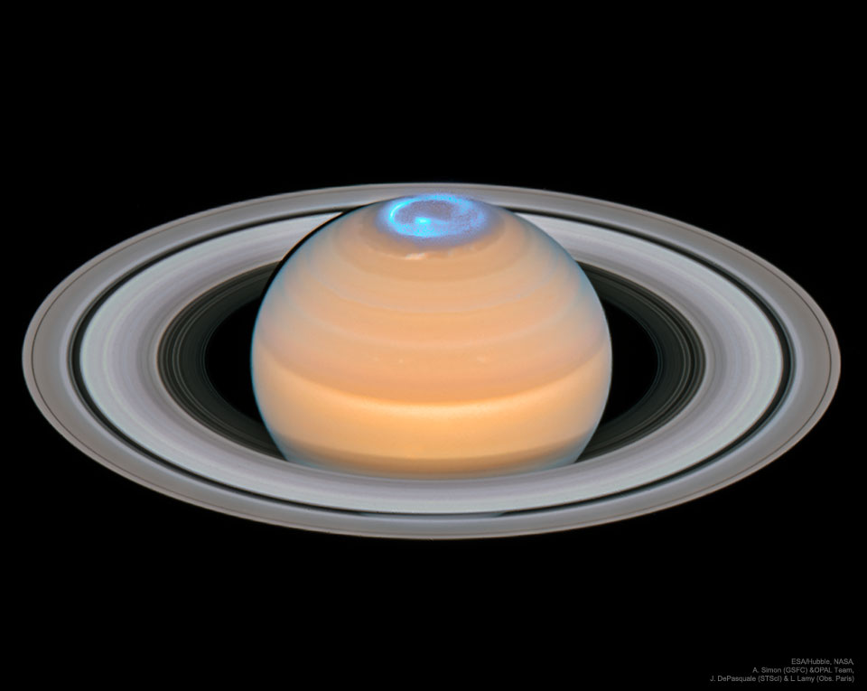

|
Jupiter |
Mercury |
Neptune |
Saturn |
| Images of Planets |
 |
|
|
 |
| Solar System Position |
5th Planet from the Sun |
1st Planet from the Sun |
8th Planet from the Sun |
6th Planet from the Sun |
| Planetary Size |
radius 43,449.7 miles (69,911 km) |
1,516 miles (2,440 km)/td>
| 30,775 miles (49,528 km) |
74,897 miles (120,500 km) |
| Rotation and Orbit Timeframe |
1 Day: 9.9 hrs / 1 Solar Orbit: 12 Earth Years |
1 Day: 176 Earth Days / 1 Solar Orbit: 88 Earth Days |
1 Day: 16 hrs / 1 Solar Orbit: 165 Earth Days |
1 Day: 10.7 hrs /1 Solar Orbit 29.4 Earth Years |
| Number of Moons |
95 officially recognized Moons |
No Moons |
16 Known Moons |
As of 2025, 274 confirmed Moons |
| Name Origin |
King of the ancient Roman gods |
Roman god of Travel |
Roman god of the Sea |
Roman god of agriculture and wealth, also the father of Jupiter |
| Rings |
4 Main Ring Structures |
None |
5 Main Rings and 4 Prominent Rings |
7 Main Ring Groups and Several Ringlets |
| Formation |
4.6 Billion Years Ago |
4.5 Billion Years Ago |
4.5 Billion Years Ago |
4.5 Billion Years Ago |